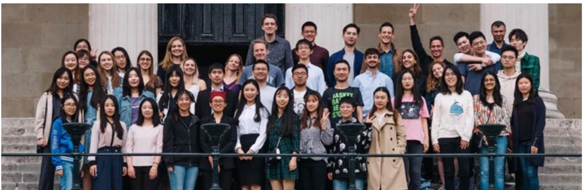

Introducing Sample Space
Issue 1
Welcome to our first edition of Sample Space, a newsletter that aims to keep our community of past and present students and staff in touch with what’s happening in Statistical Science at UCL. I hope you find the contents interesting: we plan to do more of this kind of thing in the future, to keep you all updated with the latest news from the department.
UCL Statistical Science is currently undergoing a period of significant expansion: this is part undergoing of and a strategic operational investment in mathematics, statistics and operational research that will lead to the establishment of a UCL Institute for Mathematical and Statistical Sciences, or IMSS for short. We plan for the Statistical Science and Mathematics departments to be re-housed next to each other on a single site, in a purpose-designed facility that will put UCL on the map as one of the ‘go-to’ places for the mathematical sciences in London – and that will also provide our students with a much greater sense of community than is currently possible. Bringing this idea to fruition has already taken considerable effort, and will continue to do so in the coming months and years, although I strongly believe that the rewards will be well worth it. Apart from anything else, being bigger gives us additional resources to do things like producing Sample Space!
The department has also recently established a new master’s programme in Data Science, which has proven very popular with students. A recent graduate, Mete Veyisoglu, has kindly taken the time to share his experiences of the programme in this issue. Further curriculum developments are being undertaken at the moment to ensure that we continue to equip our students with the tools to be statistically literate, perhaps a more desirable skill than ever in today’s world.
On the research side, the recent announcement of a large increase in UK government funding for the mathematical sciences is very welcome, and particularly timely in view of our IMSS expansion plans. Final preparations are underway for REF 2021, the latest iteration of the UK’s ‘Research Excellence Framework’. The department’s performance in this exercise will also contribute to the level of government funding we receive for the next few years. We have excellent staff doing exciting and incredibly diverse research, some of which is making a real impact outside academia: this issue highlights work being done by Serge Guillas and his team on understanding tsunami risk around the world.
As always, there are external challenges: as I write, UK universities are grappling with the uncertainties posed by Brexit and, more urgently, by the worldwide Covid-19 outbreak. UCL Statistical Science is such a thoroughly international community that these issues will certainly affect us to some extent. I very much hope, however, that the effects will be minimal for all of us.
Finally, I would like to extend my very sincere thanks to everyone who contributed to this first issue of Sample Space, and in particular to Samuel Livingstone for coordinating and editing it. If any readers have feedback, or potential contributions to future issues, or suggestions for material that they’d like to see, please contact him at samuel.livingstone@ucl.ac.uk. I think he and all the contributors have done a fantastic job: I hope you do too.